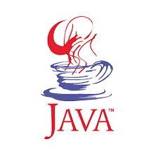
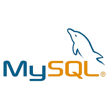

Пономарев Иван
О себе:
Студент 3го курса Иркутского государственного университета путей сообщений.
Направление обучения: "Информационные системы и технологии".
Полезные навыки:
Java core
Java Core — это термин, который может использоваться по-разному в разных контекстах. Если он встречается в вакансиях на разработчика уровня Junior, то под ним обычно подразумевается базовое знание языка Java.
JDBC
JDBC — платформенно независимый промышленный стандарт взаимодействия Java-приложений с различными СУБД, реализованный в виде пакета java.sql.

MySQL
MySQL — свободная реляционная система управления базами данных.
MS SQL Server
Microsoft SQL Server — система управления реляционными базами данных, разработанная корпорацией Microsoft.
JavaFX
JavaFX — платформа на основе Java для создания приложений с насыщенным графическим интерфейсом.